Teaser One
The first look. Watch it above, or on YouTube.
The cat was doing what cats do. Then suddenly, after a normal routine, he becomes infested with a parasite.
But this is no ordinary lion. This is god for some — universe for others.
So what happens when a universe falls apart from an infection?
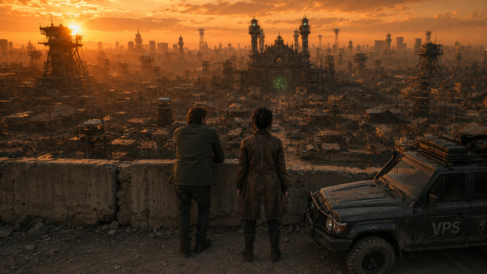
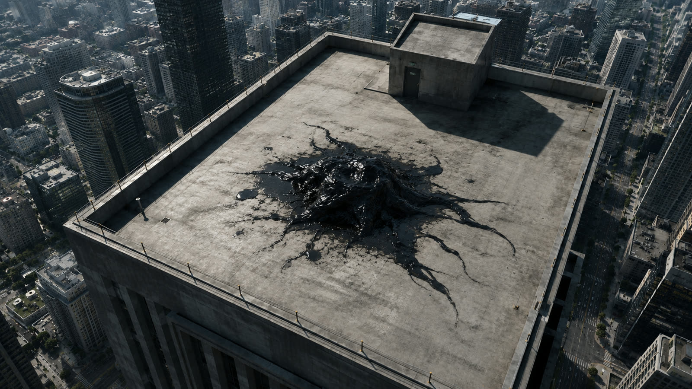
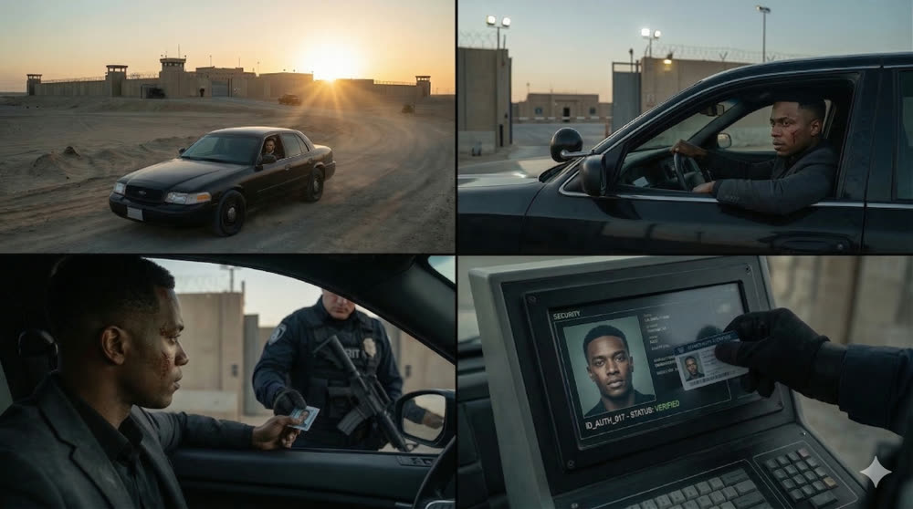
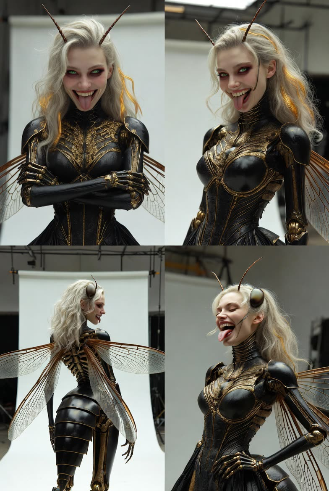
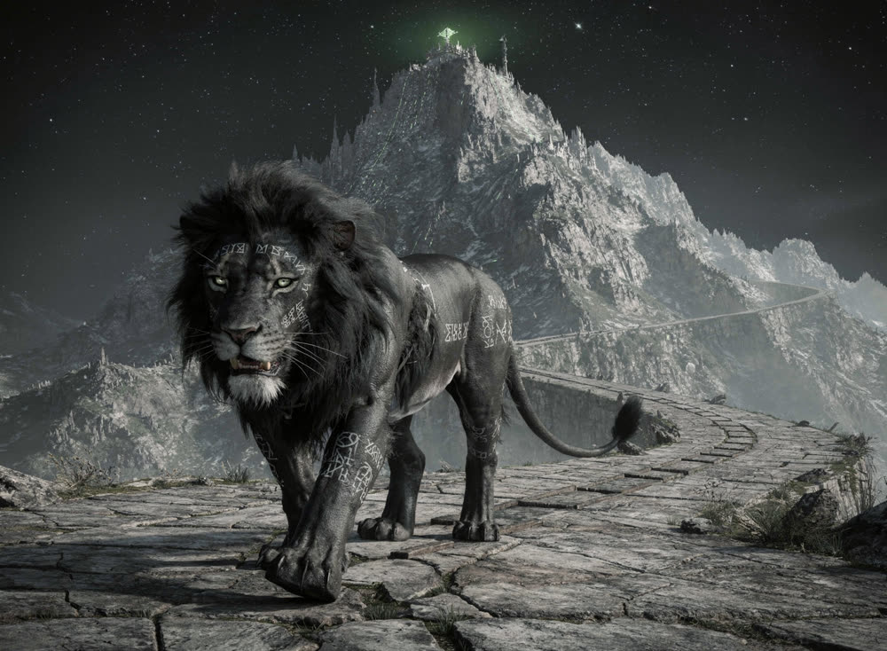
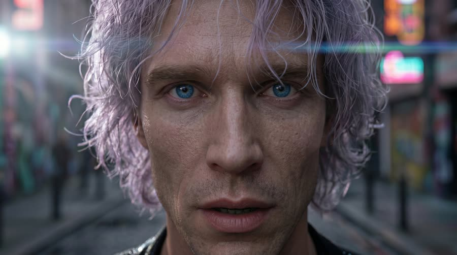
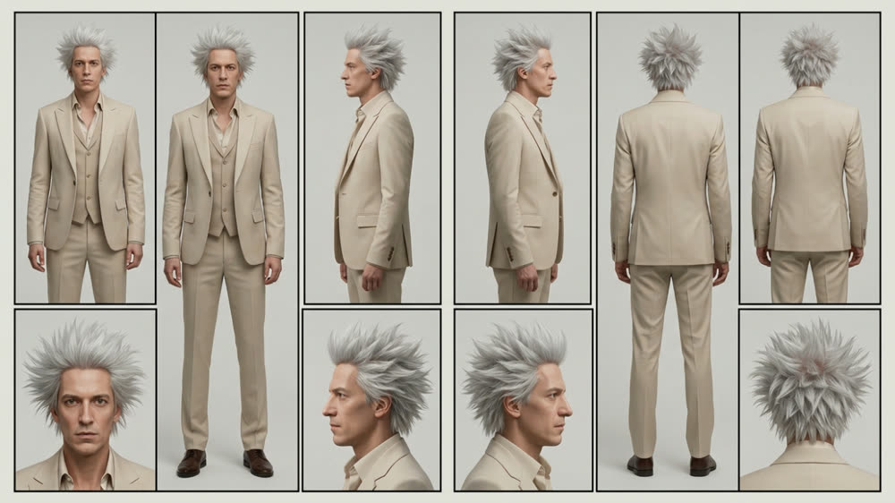
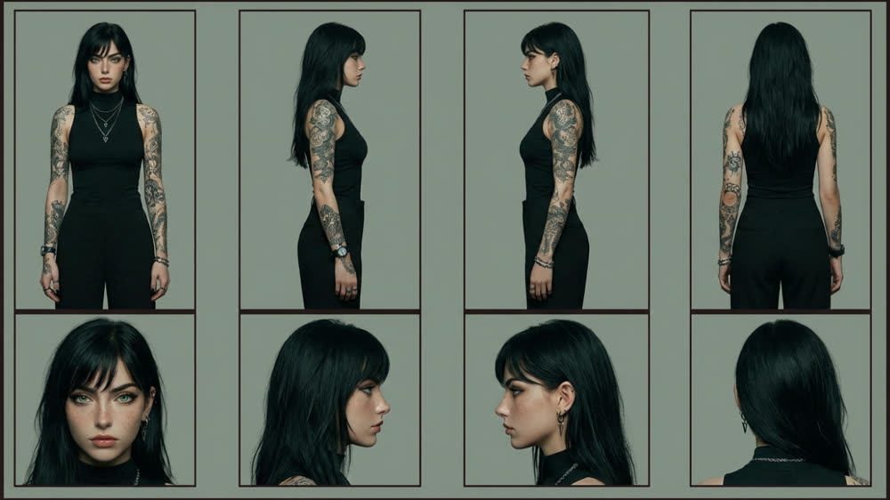
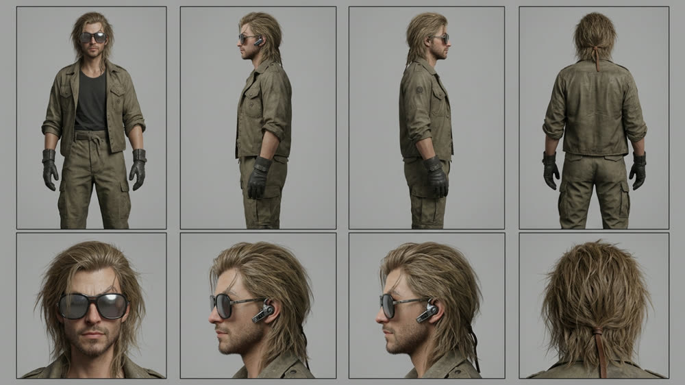
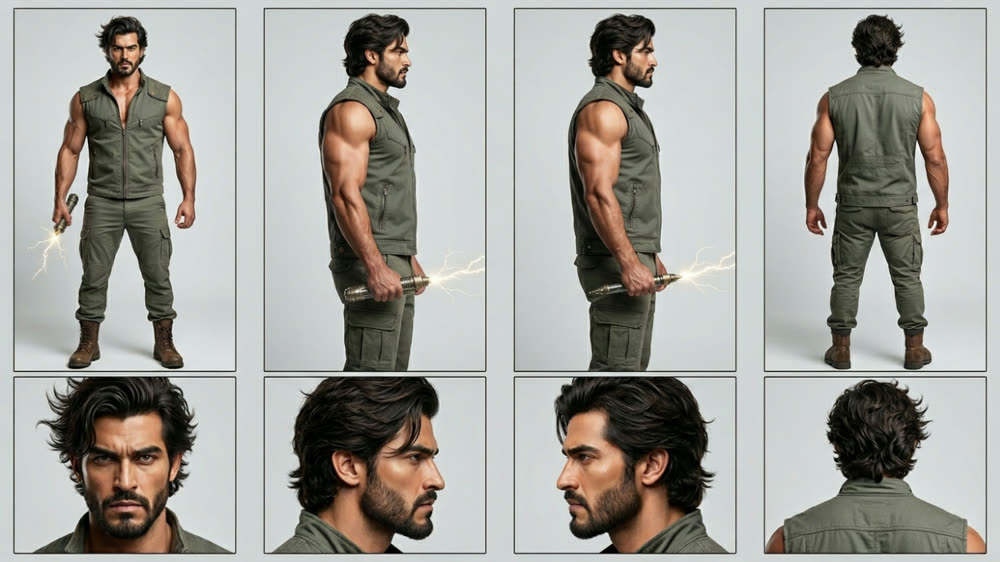
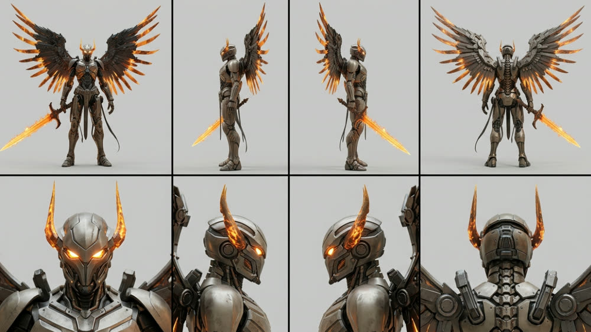
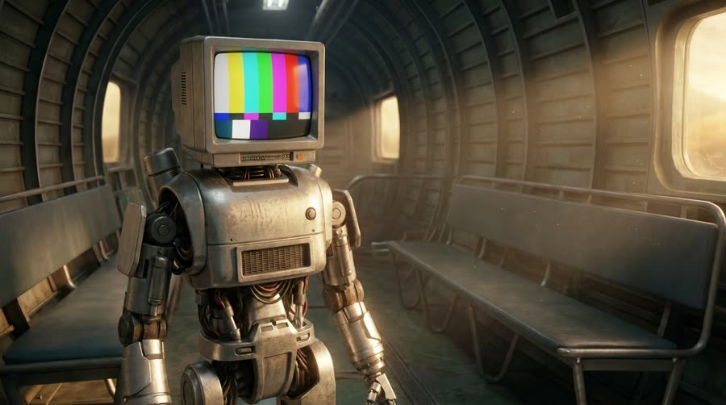
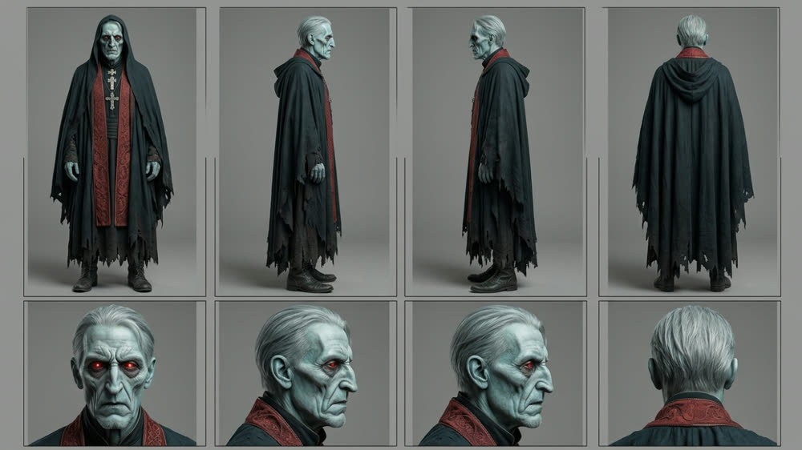
The first look. Watch it above, or on YouTube.
The story begins as a film. Release date and first footage to be revealed.
Original music from BreadFlows, released alongside the story.